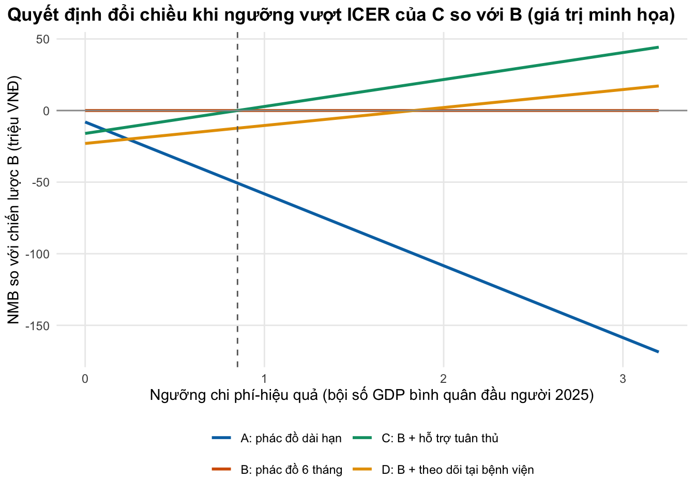

if (!isTRUE(l10n_info()[["UTF-8"]])) invisible(Sys.setlocale("LC_CTYPE", "en_US.UTF-8"))
source("../_shared/R/helpers.R")
source("../_shared/R/vn_data.R") # GDP per capita, thresholds, discount rate: course-wide values
source("code/model.R")
library(ggplot2)
ctx <- vn_context()
pd <- read_params("params/decision.csv")
m <- macro_series(read_params("params/macro.csv"))
yr <- ctx$cost_year
gdp <- ctx$gdp_pc_vnd
disc_high <- param_range(ctx, "disc_rate")[["hi"]]
# A long-lasting benefit used in the discounting example: QALYs per year and number of years
ben_qaly <- 0.05; ben_years <- 20
# Published thresholds do not state a price year in the abstracts: we assume pd$thr_assumed_year
# (an assumption, flagged illustrative), convert USD at that year's rate, and inflate with the
# Vietnamese CPI to the model's cost year, like any other cost (Lesson 2).
thr_year <- pd$thr_assumed_yearBài 5: Bối cảnh ra quyết định và báo cáo
Đặt kết quả mô hình vào các ngưỡng chi phí-hiệu quả cho Việt Nam, báo cáo theo CHEERS 2022 và tự kiểm tra một báo cáo mô hình
Vì sao bạn nên quan tâm?
Việt Nam chưa có một ngưỡng chi phí-hiệu quả chính thức, nên mỗi báo cáo gửi hội đồng đánh giá công nghệ y tế hay cơ quan BHXH tự chọn một con số. Ngưỡng mặc định của khóa học, 1 lần GDP bình quân đầu người năm 2025, là 125.5 triệu VNĐ cho một QALY (Cục Thống kê (Bộ Tài chính) 2026), bằng khoảng 24 tháng lương tối thiểu vùng I (Chính phủ 2025); ngưỡng thấp theo chi phí cơ hội chỉ bằng một nửa, 62.75 triệu VNĐ. Cùng một kết quả mô hình có thể “đạt” ở ngưỡng này và “không đạt” ở ngưỡng kia. Bài này giúp bạn trình bày quyết định trên cả dải ngưỡng, nêu điểm đổi chiều, và viết báo cáo mà người ra quyết định kiểm tra được.
Mục tiêu học tập
Sau bài này, bạn có thể:
- Giải thích ngưỡng chi phí-hiệu quả theo chi phí cơ hội (opportunity cost) và lý do quy tắc 1–3 lần GDP bình quân đầu người bị phê phán.
- Quy các ngưỡng thường gặp trong nghiên cứu Việt Nam về cùng một đơn vị (VNĐ/QALY) và trình bày quyết định ở nhiều ngưỡng thay vì một con số.
- Dùng bảng kiểm CHEERS 2022 để lập dàn ý báo cáo một đánh giá kinh tế dựa trên mô hình.
- Tự kiểm tra một báo cáo mô hình cho bối cảnh Việt Nam và kiểm tra bảng tham số bằng code.
Ý chính
- Ngưỡng chi phí-hiệu quả nên phản ánh chi phí cơ hội: lượng sức khỏe mất đi ở nơi khác khi ngân sách chuyển sang can thiệp mới (Woods và c.s. 2016; Ochalek, Lomas, và Claxton 2018).
- Quy tắc 1–3 lần GDP bình quân đầu người dễ dùng nhưng thiếu đặc thù quốc gia (Bertram và c.s. 2016) và nhiều khả năng đặt ngưỡng quá cao so với chi phí cơ hội (Marseille và c.s. 2015; Woods và c.s. 2016; Ochalek, Lomas, và Claxton 2018). Ước tính theo chi phí cơ hội cho nước thu nhập thấp và trung bình thường thấp hơn nhiều.
- Các nghiên cứu gần đây ở Việt Nam dùng nhiều ngưỡng khác nhau. Khi chưa có một ngưỡng chính thức đã được kiểm chứng, hãy trình bày quyết định ở một dải ngưỡng và nêu điểm đổi chiều.
- Điểm đổi chiều (switching point) của quyết định chính là ICER trên đường biên hiệu quả (efficiency frontier); NMB ở nhiều ngưỡng cho cùng thông tin dưới dạng dễ đọc.
- Tỷ lệ chiết khấu 3% của khóa học là thông lệ, nhưng có đề xuất dùng ít nhất 5% cho nước thu nhập thấp và trung bình thấp (Haacker, Hallett, và Atun 2020); làm phân tích độ nhạy.
- CHEERS 2022 có 28 mục; bốn mục mới về kế hoạch phân tích, tác động phân phối và tham vấn người bệnh (Husereau và c.s. 2022).
- Một báo cáo mô hình ở Việt Nam cần thêm: năm tham chiếu chi phí VNĐ, nguồn chi phí đơn vị (giá hay chi phí), bộ giá trị EQ-5D, nguồn bảng sống, lý do chọn ngưỡng, tỷ lệ tham số minh họa, mã nguồn mở, và ghi chú chủ quyền nếu có bản đồ.
Nội dung
Ngưỡng nghĩa là gì
Một can thiệp có ICER (tỷ số chi phí-hiệu quả gia tăng) nhỏ hơn ngưỡng \(\lambda\) được coi là đáng đầu tư; tương đương, nó có lợi ích ròng quy ra tiền (NMB) dương: \(\lambda\,\Delta E - \Delta C > 0\). Câu hỏi khó là \(\lambda\) bằng bao nhiêu. Khi ngân sách y tế cố định, tiền chi cho can thiệp mới phải lấy từ dịch vụ khác, và sức khỏe mất đi ở đó là chi phí cơ hội. Ngưỡng hợp lý vì thế là chi phí để hệ thống “mua” thêm một QALY hay DALY bằng cách chi tiêu hiện tại, gọi là ngưỡng phía cung (supply-side threshold).
Woods và cộng sự ước tính ngưỡng theo chi phí cơ hội cho nhiều nước; với Campuchia, ngưỡng nằm trong khoảng 4%–51% GDP bình quân đầu người, với El Salvador 11%–51% (Woods và c.s. 2016). Ochalek và cộng sự dùng cách tiếp cận khác cho nhiều nước thu nhập thấp và trung bình, và cũng thấy ngưỡng thường thấp hơn 1–3 lần GDP (Ochalek, Lomas, và Claxton 2018). Hai bài này không công bố trong phần chính một ước tính riêng cho Việt Nam (ước tính theo từng nước của Ochalek nằm ở tệp bổ sung mà chúng tôi chưa mở được); bài học dùng các tỷ lệ trên chỉ để minh họa cỡ độ lớn. Vì thế khóa học dùng 0.5 lần GDP bình quân đầu người (wtp_low trong vn_context()) làm ngưỡng thấp cho phân tích độ nhạy.
Vì sao quy tắc GDP bị phê phán
Quy tắc “dưới 1 lần GDP bình quân đầu người cho mỗi DALY tránh được là rất chi phí-hiệu quả, dưới 3 lần là chi phí-hiệu quả” gắn với WHO-CHOICE và được nhiều nước dùng. Có hai phê phán. Thứ nhất, ngưỡng này thấp về yêu cầu đến mức hầu như can thiệp nào có bằng chứng hiệu quả cũng qua được, nên không giúp xếp hạng và không nói gì về khả năng chi trả (Marseille và c.s. 2015). Thứ hai, nó thiếu đặc thù quốc gia, nên cùng một ICER có thể dẫn đến quyết định sai ở nước này mà đúng ở nước khác; nhóm tác giả WHO đề nghị đọc chi phí-hiệu quả cùng tác động ngân sách và tính khả thi trong một quy trình minh bạch, không dùng một ngưỡng đơn lẻ (Bertram và c.s. 2016). Với một phác đồ MDR-TB, điều này có nghĩa ICER dưới 3 lần GDP chưa cho biết phác đồ ấy nên được tài trợ thay cho dịch vụ nào. Quy tắc vẫn phổ biến: trong cơ sở dữ liệu Tufts, 66% nghiên cứu chi phí cho mỗi DALY ở nước thu nhập thấp và trung bình xuất bản 2000–2015 viện dẫn nó, và không bài nào trong 60 bài được đọc toàn văn biện minh cho việc dùng nó ở nước nghiên cứu ngoài việc trích hướng dẫn chung (Leech và c.s. 2018).
Bối cảnh Việt Nam
Bộ Y tế đã yêu cầu đánh giá công nghệ y tế (HTA) với thuốc mới đề nghị đưa vào danh mục bảo hiểm y tế từ năm 2018, và hướng dẫn HTA quốc gia khi đó đang được xây dựng (Mai và c.s. 2020). Các phân tích chi phí-hiệu quả công bố gần đây ở Việt Nam dùng những ngưỡng rất khác nhau; 1 lần GDP bình quân đầu người là mốc hay gặp nhất, nhưng là quy ước của người nghiên cứu, không phải ngưỡng do cơ quan quản lý ban hành: 1 lần GDP bình quân đầu người, tương đương US$4,700 mỗi QALY (Ong và c.s. 2026); 3 lần GDP bình quân đầu người (Nguyen và c.s. 2026); 305.7 triệu VNĐ mỗi QALY (Toan và c.s. 2026); và US$12,000 mỗi QALY (Horta và c.s. 2026). Khi các con số khác nhau nhiều lần như vậy, kết luận “đạt chi phí-hiệu quả” phụ thuộc vào lựa chọn ngưỡng nhiều hơn vào mô hình. Cách trung thực là trình bày kết quả ở cả dải ngưỡng, nêu ngưỡng tại đó quyết định đổi chiều, và để người ra quyết định thấy rõ đánh đổi. M03 làm điều này một cách đầy đủ với đường cong chấp nhận chi phí-hiệu quả (CEAC).
Tỷ lệ chiết khấu là lựa chọn thứ hai cần lý giải. Mức 3% mỗi năm (giá trị dùng chung của khóa học) thường được áp dụng trong y tế toàn cầu và trong các CEA Việt Nam gần đây (Ong và c.s. 2026), nhưng Haacker và cộng sự lập luận rằng với nước thu nhập thấp và trung bình thấp, tỷ lệ ít nhất 5% phù hợp hơn với tốc độ tăng trưởng kinh tế (Haacker, Hallett, và Atun 2020). Việt Nam được các tác giả trong nước mô tả là một nước thu nhập trung bình thấp (Nguyen và c.s. 2026). Ít nhất, hãy chạy cả hai mức.
Báo cáo: CHEERS 2022 và khung tham chiếu
CHEERS 2022 là bảng kiểm 28 mục cho báo cáo đánh giá kinh tế y tế, áp dụng cho cả nghiên cứu dựa trên mô hình (Husereau và c.s. 2022). So với bản 2013, các mục mới gồm kế hoạch phân tích kinh tế y tế, mô tả tác động phân phối (ai được lợi, ai chịu thiệt) và cách tham vấn người bệnh cùng các bên liên quan. Khung tham chiếu iDSI gồm các nguyên tắc về phương pháp và tiêu chuẩn báo cáo cho đánh giá kinh tế ở nước thu nhập thấp và trung bình, và tự mô tả là công cụ hỗ trợ tư duy chứ không thay thế suy xét theo bối cảnh (Wilkinson và c.s. 2016). Khung tham chiếu của Mỹ khuyến nghị kèm bảng liệt kê tác động để làm rõ phạm vi (Sanders và c.s. 2016).
CHEERS nói cần báo cáo gì; nó không nói làm thế nào cho đúng. Với mô hình dùng đầu vào Việt Nam, bài học đề xuất 12 câu hỏi bổ sung, gắn với các mục CHEERS tương ứng (xem phần thực hành). Câu hỏi cuối cùng áp dụng cho mọi bản đồ Việt Nam trong báo cáo: quần đảo Hoàng Sa thuộc thành phố Đà Nẵng và quần đảo Trường Sa thuộc tỉnh Khánh Hòa phải được thể hiện rõ.
Thực hành
Nạp tham số của bài, cùng GDP bình quân đầu người, ngưỡng và tỷ lệ chiết khấu từ vn_context(): không module nào tự gõ lại các giá trị này.
Quy mọi ngưỡng về VNĐ mỗi QALY của năm tham chiếu chi phí 2025, sắp xếp từ thấp đến cao. Tóm tắt các nghiên cứu Việt Nam không nêu năm tham chiếu chi phí, nên bài giả định năm 2024 (giả định, đánh dấu minh họa): với nghiên cứu của Ong, ngưỡng US$4,700 đúng bằng GDP bình quân đầu người năm 2024 của Cục Thống kê (Cục Thống kê (Bộ Tài chính) 2026). Ngưỡng USD đổi theo tỷ giá năm đó rồi quy về giá 2025 bằng CPI, như mọi chi phí khác (Bài 2). Các tỷ lệ của Woods và cộng sự là cho nước khác, áp vào GDP Việt Nam chỉ để minh họa cỡ độ lớn. Kiểm tra: mọi ngưỡng dương, và dòng “1 lần GDP” đúng bằng 1.
# Candidate thresholds expressed in VND per QALY (VND of the cost year; published values moved
# from their assumed price year with the Vietnamese CPI)
usd_to_cost_year <- function(usd) cost_to_vnd(usd, "USD", thr_year, yr, m, "cpi", "local")
thr <- data.frame(
label = c(paste(fmt_num(pd$woods_kh_low, 2), "lần GDP (cận dưới, Campuchia)"),
paste(fmt_num(pd$woods_sv_low, 2), "lần GDP (cận dưới, El Salvador)"),
paste(fmt_num(ctx$wtp_low / gdp, 2), "lần GDP (ngưỡng thấp của khóa học)"),
paste(fmt_num(pd$woods_sv_high, 2), "lần GDP (cận trên, hai nước)"),
"1 lần GDP bình quân đầu người",
paste0(fmt_usd(pd$thr_ong2026_usd), "/QALY (nghiên cứu Việt Nam)"),
paste0(fmt_usd(pd$thr_horta2026_usd), "/QALY (nghiên cứu Việt Nam)"),
paste(fmt_num(pd$thr_toan2026_vnd / 1e6, 1), "triệu VNĐ/QALY (nghiên cứu Việt Nam)"),
paste(fmt_num(pd$thr_nguyen2026_mult), "lần GDP bình quân đầu người")),
basis = c("chi phí cơ hội", "chi phí cơ hội", "chi phí cơ hội", "chi phí cơ hội",
"GDP", "dùng trong nghiên cứu", "dùng trong nghiên cứu", "dùng trong nghiên cứu", "GDP"),
vnd = c(pd$woods_kh_low * gdp, pd$woods_sv_low * gdp, ctx$wtp_low,
pd$woods_sv_high * gdp, ctx$wtp, usd_to_cost_year(pd$thr_ong2026_usd),
usd_to_cost_year(pd$thr_horta2026_usd), inflate(pd$thr_toan2026_vnd, thr_year, yr, m$vn_cpi),
pd$thr_nguyen2026_mult * gdp)
)
thr$times_gdp <- thr$vnd / gdp
thr <- thr[order(thr$vnd), ]
thr label basis vnd
1 0.04 lần GDP (cận dưới, Campuchia) chi phí cơ hội 5020000
2 0.11 lần GDP (cận dưới, El Salvador) chi phí cơ hội 13805000
3 0.50 lần GDP (ngưỡng thấp của khóa học) chi phí cơ hội 62750000
4 0.51 lần GDP (cận trên, hai nước) chi phí cơ hội 64005000
6 US$4,700/QALY (nghiên cứu Việt Nam) dùng trong nghiên cứu 117334287
5 1 lần GDP bình quân đầu người GDP 125500000
7 US$12,000/QALY (nghiên cứu Việt Nam) dùng trong nghiên cứu 299576903
8 305.7 triệu VNĐ/QALY (nghiên cứu Việt Nam) dùng trong nghiên cứu 315818649
9 3 lần GDP bình quân đầu người GDP 376500000
times_gdp
1 0.0400000
2 0.1100000
3 0.5000000
4 0.5100000
6 0.9349346
5 1.0000000
7 2.3870670
8 2.5164833
9 3.0000000stopifnot(all(thr$vnd > 0), abs(thr$times_gdp[thr$label == "1 lần GDP bình quân đầu người"] - 1) < 1e-12)
# Everyday reading of the course threshold: months of region-I minimum wage per QALY
wtp_in_wage_months <- c(wtp = ctx$wtp, wtp_low = ctx$wtp_low) / ctx$min_wage_region1_month
wtp_in_wage_months wtp wtp_low
23.63465 11.81733 spread <- max(thr$vnd) / min(thr$vnd)GDP bình quân đầu người năm 2025 là 125.5 triệu VNĐ (Cục Thống kê (Bộ Tài chính) 2026). Ngưỡng cao nhất gấp 75 lần ngưỡng thấp nhất trong bảng.
Bây giờ lấy bốn chiến lược minh họa cho người bệnh lao kháng thuốc (chi phí và QALY đều là giá trị minh họa) và dựng đường biên hiệu quả. Kiểm tra: còn đúng hai chiến lược trên đường biên.
strategies <- data.frame(
strategy = c("A: phác đồ dài hạn", "B: phác đồ 6 tháng", "C: B + hỗ trợ tuân thủ",
"D: B + theo dõi tại bệnh viện"),
cost = c(pd$s1_cost, pd$s2_cost, pd$s3_cost, pd$s4_cost),
qaly = c(pd$s1_qaly, pd$s2_qaly, pd$s3_qaly, pd$s4_qaly)
)
fr <- frontier(strategies$strategy, strategies$cost, strategies$qaly)
# A hypothetical extra strategy for Exercise 2 (cost in VND, QALYs)
e_cost <- 58e6; e_qaly <- 14.68
fr strategy cost effect status icer
1 B: phác đồ 6 tháng 5.2e+07 14.60 trên đường biên NA
2 A: phác đồ dài hạn 6.0e+07 14.20 bị lấn át NA
3 C: B + hỗ trợ tuân thủ 6.8e+07 14.75 trên đường biên 106666667
4 D: B + theo dõi tại bệnh viện 7.5e+07 14.70 bị lấn át NAicer_c <- fr$icer[fr$strategy == "C: B + hỗ trợ tuân thủ"]
stopifnot(sum(fr$status == "trên đường biên") == 2, !is.na(icer_c),
fr$status[fr$strategy == strategies$strategy[1]] == "bị lấn át",
fr$status[fr$strategy == strategies$strategy[4]] == "bị lấn át")
# Test on a case with a known answer: C is extendedly dominated (its ICER of 40 against B is
# above the ICER of 10 of D against C), so the frontier is A, B, D with ICERs 10 and 25
known <- frontier(c("A", "B", "C", "D"), c(0, 10, 30, 35), c(0, 1, 1.5, 2))
known strategy cost effect status icer
1 A 0 0.0 trên đường biên NA
2 B 10 1.0 trên đường biên 10
3 C 30 1.5 lấn át mở rộng NA
4 D 35 2.0 trên đường biên 25stopifnot(known$status[known$strategy == "C"] == "lấn át mở rộng",
all(abs(known$icer[known$status == "trên đường biên"][-1] - c(10, 25)) < 1e-9))Chiến lược A bị B lấn át (đắt hơn, ít QALY hơn), D bị C lấn át. ICER của C so với B là 106.7 triệu VNĐ mỗi QALY, tức 0.85 lần GDP bình quân đầu người.
Chọn chiến lược tốt nhất (NMB lớn nhất) ở từng ngưỡng:
# The decision at each candidate threshold: the strategy with the highest NMB
thr$best <- best_at(strategies$strategy, strategies$cost, strategies$qaly, thr$vnd)
thr[, c("label", "times_gdp", "best")] label times_gdp best
1 0.04 lần GDP (cận dưới, Campuchia) 0.0400000 B: phác đồ 6 tháng
2 0.11 lần GDP (cận dưới, El Salvador) 0.1100000 B: phác đồ 6 tháng
3 0.50 lần GDP (ngưỡng thấp của khóa học) 0.5000000 B: phác đồ 6 tháng
4 0.51 lần GDP (cận trên, hai nước) 0.5100000 B: phác đồ 6 tháng
6 US$4,700/QALY (nghiên cứu Việt Nam) 0.9349346 C: B + hỗ trợ tuân thủ
5 1 lần GDP bình quân đầu người 1.0000000 C: B + hỗ trợ tuân thủ
7 US$12,000/QALY (nghiên cứu Việt Nam) 2.3870670 C: B + hỗ trợ tuân thủ
8 305.7 triệu VNĐ/QALY (nghiên cứu Việt Nam) 2.5164833 C: B + hỗ trợ tuân thủ
9 3 lần GDP bình quân đầu người 3.0000000 C: B + hỗ trợ tuân thủswitch_point <- icer_c / gdp
# The text states: every opportunity-cost threshold picks B; from the lowest published-study
# threshold (Ong 2026) upwards, C is picked. Guard those statements against changes in inputs.
b_name <- "B: phác đồ 6 tháng"; c_name <- "C: B + hỗ trợ tuân thủ"
opp <- thr$basis == "chi phí cơ hội"
stopifnot(all(thr$best[opp] == b_name),
abs(min(thr$vnd[thr$best == c_name]) - usd_to_cost_year(pd$thr_ong2026_usd)) < 1)Mọi ngưỡng theo chi phí cơ hội chọn B; mọi ngưỡng từ US$4,700 mỗi QALY trở lên chọn C. Quyết định đổi chiều tại 0.85 lần GDP. Đó là câu trả lời nên đưa cho người ra quyết định: “C đáng đầu tư nếu hệ thống sẵn lòng trả hơn 106.7 triệu VNĐ cho một QALY”, thay vì “C đạt chi phí-hiệu quả”.
Vẽ NMB của từng chiến lược so với B theo ngưỡng. Kiểm tra bằng mắt: các đường cắt nhau đúng tại điểm đổi chiều (nét đứt), và đường của A và D không bao giờ là cao nhất.
wtp_grid <- seq(0, 3.2 * gdp, length.out = 200)
nmb_dat <- do.call(rbind, lapply(seq_len(nrow(strategies)), function(i) {
data.frame(wtp = wtp_grid, nmb = nmb(strategies$cost[i], strategies$qaly[i], wtp_grid),
strategy = strategies$strategy[i])
}))
# Show NMB relative to strategy B so the lines are easy to compare
nmb_b <- nmb(pd$s2_cost, pd$s2_qaly, wtp_grid)
nmb_dat$nmb_vs_b <- nmb_dat$nmb - rep(nmb_b, nrow(strategies))
fig_nmb <- ggplot(nmb_dat, aes(wtp / gdp, nmb_vs_b / 1e6, colour = strategy)) +
geom_line(linewidth = 1) +
geom_vline(xintercept = switch_point, linetype = "dashed", colour = "grey40") +
geom_hline(yintercept = 0, colour = "grey60") +
scale_colour_manual(values = pal_course[1:4], name = NULL) +
labs(x = "Ngưỡng chi phí-hiệu quả (bội số GDP bình quân đầu người 2025)",
y = "NMB so với chiến lược B (triệu VNĐ)",
title = "Quyết định đổi chiều khi ngưỡng vượt ICER của C so với B (giá trị minh họa)") +
guides(colour = guide_legend(nrow = 2)) +
theme_course()
save_fig(fig_nmb, "l05-nmb-threshold.png")
Ảnh hưởng của tỷ lệ chiết khấu lên một lợi ích kéo dài: 0.05 QALY mỗi năm trong 20 năm. Thời điểm chiết khấu cũng là một quy ước phải báo cáo (xem M01 về chiết khấu): pv_start chiết khấu đầu mỗi năm (năm đầu không bị chiết khấu), pv_end chiết khấu cuối năm. Kiểm tra: ở 0% cả hai bằng 1 QALY, và cuối năm không bao giờ lớn hơn đầu năm.
# A benefit of ben_qaly QALY a year for ben_years years, valued today at 0%, the course rate and
# the upper rate. Timing is a convention to report: "đầu năm" discounts year 1 by 0 years
# (t = 0..ben_years-1), "cuối năm" by 1 year (t = 1..ben_years).
disc_tab <- data.frame(rate = c(0, ctx$disc_rate, disc_high))
disc_tab$pv_start <- vapply(disc_tab$rate, function(r) sum(ben_qaly * discount_weights(0:(ben_years - 1), r)), numeric(1))
disc_tab$pv_end <- vapply(disc_tab$rate, function(r) sum(ben_qaly * discount_weights(1:ben_years, r)), numeric(1))
disc_tab rate pv_start pv_end
1 0.00 1.000000 1.0000000
2 0.03 0.766190 0.7438737
3 0.05 0.654266 0.6231105stopifnot(abs(disc_tab$pv_start[1] - ben_qaly * ben_years) < 1e-12, all(disc_tab$pv_end <= disc_tab$pv_start))Ở 5%, giá trị hiện tại của lợi ích (chiết khấu đầu năm) chỉ còn 0.65 QALY, so với 0.77 ở 3%; chiết khấu cuối năm cho 0.62 và 0.74. Can thiệp có lợi ích đến muộn (dự phòng, kiểm soát kháng thuốc) chịu ảnh hưởng nhiều nhất.
Bảng kiểm CHEERS 2022 dưới dạng dữ liệu, để dùng làm dàn ý báo cáo:
cheers <- cheers_items()
table(cheers$section)[unique(cheers$section)]
Tiêu đề Tóm tắt Giới thiệu Phương pháp Kết quả
1 1 1 18 4
Bàn luận Thông tin khác
1 2 stopifnot(nrow(cheers) == 28)| Mục | Phần | Chủ đề | Topic (English) |
|---|---|---|---|
| 1 | Tiêu đề | Tiêu đề | Title |
| 2 | Tóm tắt | Tóm tắt | Abstract |
| 3 | Giới thiệu | Bối cảnh và mục tiêu | Background and objectives |
| 4 | Phương pháp | Kế hoạch phân tích kinh tế y tế | Health economic analysis plan |
| 5 | Phương pháp | Quần thể nghiên cứu | Study population |
| 6 | Phương pháp | Bối cảnh và địa điểm | Setting and location |
| 7 | Phương pháp | Các phương án so sánh | Comparators |
| 8 | Phương pháp | Quan điểm phân tích | Perspective |
| 9 | Phương pháp | Khung thời gian | Time horizon |
| 10 | Phương pháp | Tỷ lệ chiết khấu | Discount rate |
| 11 | Phương pháp | Lựa chọn kết cục | Selection of outcomes |
| 12 | Phương pháp | Đo lường kết cục | Measurement of outcomes |
| 13 | Phương pháp | Định giá kết cục | Valuation of outcomes |
| 14 | Phương pháp | Đo lường và định giá nguồn lực, chi phí | Measurement and valuation of resources and costs |
| 15 | Phương pháp | Tiền tệ, năm giá và quy đổi | Currency, price date, and conversion |
| 16 | Phương pháp | Lý do chọn và mô tả mô hình | Rationale and description of model |
| 17 | Phương pháp | Phân tích và giả định | Analytics and assumptions |
| 18 | Phương pháp | Mô tả tính không đồng nhất | Characterising heterogeneity |
| 19 | Phương pháp | Mô tả tác động phân phối | Characterising distributional effects |
| 20 | Phương pháp | Mô tả bất định | Characterising uncertainty |
| 21 | Phương pháp | Cách tham vấn người bệnh và các bên liên quan | Approach to engagement with patients and others |
| 22 | Kết quả | Tham số của nghiên cứu | Study parameters |
| 23 | Kết quả | Tóm tắt kết quả chính | Summary of main results |
| 24 | Kết quả | Ảnh hưởng của bất định | Effect of uncertainty |
| 25 | Kết quả | Ảnh hưởng của việc tham vấn | Effect of engagement with patients and others |
| 26 | Bàn luận | Phát hiện, hạn chế, khả năng khái quát | Study findings, limitations, generalisability, and current knowledge |
| 27 | Thông tin khác | Nguồn tài trợ | Source of funding |
| 28 | Thông tin khác | Xung đột lợi ích | Conflicts of interest |
Các câu hỏi bổ sung cho báo cáo mô hình ở Việt Nam, áp vào bản thảo báo cáo về mô hình lao kháng thuốc. Các trường để trống được coi là chưa báo cáo.
# Metadata of a draft report on the MDR-TB model (fields left empty are not reported yet)
draft <- list(
perspective = "Hệ thống y tế",
currency_year = paste0("VNĐ, giá năm ", yr, ", CPI Việt Nam"),
unit_cost_sources = "",
charges_vs_costs = NA,
value_set = "EQ-5D-5L, bộ giá trị Việt Nam",
life_table = "",
threshold = "1 lần GDP bình quân đầu người",
discount_rates = paste0(fmt_pct(ctx$disc_rate, 0), "/năm; độ nhạy ", fmt_pct(0, 0), " và ", fmt_pct(disc_high, 0)),
evidence_synthesis = "RR của thử nghiệm áp lên nguy cơ nền Việt Nam",
illustrative_share = "",
code_url = "",
map_note = NA
)
rep_check <- check_report(draft)
rep_check id
1 VN1
2 VN2
3 VN3
4 VN4
5 VN5
6 VN6
7 VN7
8 VN8
9 VN9
10 VN10
11 VN11
12 VN12
check_vi
1 Nêu rõ quan điểm (BHXH, hệ thống y tế, xã hội) và chi phí nào nằm trong phạm vi
2 Ghi đơn vị tiền và năm giá (VNĐ năm nào), chỉ số giá và tỷ giá đã dùng
3 Liệt kê nguồn của từng chi phí đơn vị (giá dịch vụ, giá trúng thầu, nghiên cứu chi phí)
4 Nói rõ số liệu là giá/hóa đơn hay chi phí nguồn lực thật, và cách xử lý chênh lệch
5 Ghi bộ giá trị EQ-5D dùng để tính thỏa dụng (ưu tiên bộ giá trị Việt Nam)
6 Ghi nguồn bảng sống (năm, giới, nguồn) cho tử vong nền, và chọn bảng quốc gia hay bảng tham chiếu cho YLL
7 Giải thích ngưỡng chi phí-hiệu quả và trình bày kết quả ở nhiều ngưỡng
8 Ghi tỷ lệ chiết khấu cơ sở và phân tích độ nhạy với tỷ lệ khác
9 Mô tả cách gộp bằng chứng và cách chuyển HR, RR, OR thành xác suất
10 Báo cáo số tham số là giá trị minh họa hoặc ý kiến chuyên gia
11 Công khai mã và bảng tham số để người khác chạy lại
12 Bản đồ Việt Nam (nếu có) ghi Hoàng Sa thuộc Đà Nẵng, Trường Sa thuộc Khánh Hòa
status
1 Đã có
2 Đã có
3 Còn thiếu
4 Còn thiếu
5 Đã có
6 Còn thiếu
7 Đã có
8 Đã có
9 Đã có
10 Còn thiếu
11 Còn thiếu
12 Còn thiếun_missing <- sum(rep_check$status == "Còn thiếu")Bản thảo còn thiếu 6 trên 12 mục. Phần thiếu gồm nguồn chi phí đơn vị, bản chất số liệu chi phí, nguồn bảng sống và các mục về minh bạch (tỷ lệ tham số minh họa, mã nguồn, bản đồ).
Cuối cùng, kiểm tra toàn bộ bảng tham số của module: tham số thật có nguồn, mọi khóa trích dẫn tồn tại trong refs.bib, khoảng thấp–cao hợp lệ. Kiểm tra này nên chạy mỗi khi sửa bảng tham số.
# Audit every parameter file of this module against refs.bib
keys <- bib_keys("refs.bib")
files <- list.files("params", pattern = "\\.csv$", full.names = TRUE)
audit <- do.call(rbind, lapply(files, function(f) {
cbind(file = basename(f), audit_params(attr(read_params(f), "table"), keys))
}))
# Share of illustrative values per file. The macro file (World Bank series) and the life table
# are published data, not modelling assumptions, so a single pooled share would be misleading.
audit$share_illustrative <- audit$n_illustrative / audit$n_params
audit file n_params n_illustrative n_missing_source
1 costing.csv 55 5 0
2 decision.csv 18 9 0
3 lifetable_gso2009.csv 74 0 0
4 macro.csv 43 0 0
5 outcomes.csv 65 0 0
6 synthesis.csv 25 9 0
n_low_above_high n_value_outside_range n_dist_unparameterised
1 0 0 0
2 0 0 0
3 0 0 0
4 0 0 0
5 0 0 0
6 0 0 0
n_unknown_citekey share_illustrative
1 0 0.09090909
2 0 0.50000000
3 0 0.00000000
4 0 0.00000000
5 0 0.00000000
6 0 0.36000000stopifnot(all(audit$n_missing_source == 0), all(audit$n_unknown_citekey == 0),
all(audit$n_low_above_high == 0), all(audit$n_value_outside_range == 0),
all(audit$n_dist_unparameterised == 0))Module có 280 dòng tham số riêng (chưa kể các giá trị dùng chung trong _shared), nhưng một tỷ lệ gộp toàn module sẽ đánh lừa: chuỗi vĩ mô và bảng sống 2009 cho bài tập là số liệu đã công bố, không phải giả định mô hình. Hãy báo cáo tỷ lệ minh họa theo nhóm tham số mà mô hình dùng: 9% ở tệp chi phí, 50% ở tệp bối cảnh ra quyết định, 36% ở tệp tổng hợp bằng chứng, 0% ở tệp kết cục. Kiểm tra cũng bắt các dòng khai báo phân phối ngẫu nhiên nhưng không có tham số hay khoảng để chạy PSA (hiện còn 0 dòng).
Mẹo thực hành
- Báo cáo kết quả ở dạng “can thiệp đáng đầu tư nếu ngưỡng lớn hơn X”, kèm hình NMB theo ngưỡng. Người đọc tự đặt ngưỡng của họ vào.
- Đổi mọi ngưỡng về cùng đơn vị tiền và năm tham chiếu chi phí với mô hình trước khi so sánh (Bài 2).
- Dùng CHEERS 2022 làm dàn ý trước khi viết, không phải bảng kiểm điền sau khi viết xong.
- Đưa hàm kiểm tra bảng tham số (
audit_params()) vào quy trình: chạy trước mỗi lần xuất kết quả.
Lỗi thường gặp
- Kết luận “đạt chi phí-hiệu quả” theo 1–3 lần GDP mà không lý giải. Ở ví dụ trên, cùng kết quả mô hình cho hai quyết định ngược nhau tùy ngưỡng.
- So ICER với ngưỡng khác năm tham chiếu chi phí hoặc khác đơn vị tiền. Ngưỡng tính bằng USD phải đổi theo đúng tỷ giá và năm tham chiếu chi phí.
- Tính ICER của mọi cặp chiến lược. Chỉ ICER giữa các chiến lược kề nhau trên đường biên hiệu quả mới có ý nghĩa.
- Bỏ qua mục báo cáo về nguồn đầu vào. Người phản biện ở Việt Nam sẽ hỏi chi phí lấy từ đâu, năm nào, là giá hay chi phí.
Bài tập
- (Dễ) Ở bội số nào của GDP bình quân đầu người thì C trở thành lựa chọn tốt nhất?
Lời giải
# Exercise 1: at which multiple of GDP per capita does C become the best choice?
switch_point[1] 0.8499336Đó là ICER của C so với B chia cho GDP bình quân đầu người. Mọi ngưỡng lớn hơn giá trị này chọn C.
- (Vừa) Thêm chiến lược E: chi phí 58 triệu VNĐ, 14.68 QALY. Đường biên hiệu quả thay đổi thế nào?
Lời giải
# Exercise 2: add strategy E (cost 58 million, 14.68 QALYs) and redo the frontier
fr_e <- frontier(c(strategies$strategy, "E: mới"), c(strategies$cost, e_cost), c(strategies$qaly, e_qaly))
fr_e strategy cost effect status icer
1 B: phác đồ 6 tháng 5.2e+07 14.60 trên đường biên NA
2 E: mới 5.8e+07 14.68 trên đường biên 75000000
3 A: phác đồ dài hạn 6.0e+07 14.20 bị lấn át NA
4 C: B + hỗ trợ tuân thủ 6.8e+07 14.75 trên đường biên 142857143
5 D: B + theo dõi tại bệnh viện 7.5e+07 14.70 bị lấn át NAicer_c_new <- fr_e$icer[fr_e$strategy == c_name]
# The solution text: E joins the frontier between B and C, and C's ICER (now against E) rises
stopifnot(fr_e$status[fr_e$strategy == "E: mới"] == "trên đường biên", icer_c_new > icer_c)E nằm trên đường biên, giữa B và C. ICER của C bây giờ tính so với E: 142.9 triệu VNĐ mỗi QALY, cao hơn 106.7 triệu trước đó, nên C cần ngưỡng cao hơn mới được chọn. Thêm một phương án hợp lý có thể thay đổi kết luận về các phương án khác.
- (Khó) Hoàn thiện bản thảo báo cáo sao cho đủ mọi mục, rồi chạy lại bảng kiểm. Với mỗi mục bạn điền, nêu bài học nào trong module cung cấp nội dung đó.
Lời giải
# Exercise 3: complete the draft and re-run the checklist
draft2 <- draft
draft2$unit_cost_sources <- "Giá dịch vụ y tế, giá trúng thầu thuốc, nghiên cứu chi phí đã công bố"
draft2$charges_vs_costs <- "Hóa đơn viện phí, không điều chỉnh bằng tỷ số chi phí/giá"
draft2$life_table <- "Bảng sống WHO 2023 cho Việt Nam (tệp dùng chung của khóa học), gộp theo giới người bệnh; độ nhạy với tuổi thọ của Cục Thống kê; YLL tính cả bằng bảng tham chiếu"
cost_row <- audit[audit$file == "costing.csv", ]
draft2$illustrative_share <- sprintf("%d trên %d tham số chi phí là giá trị minh họa", cost_row$n_illustrative, cost_row$n_params)
draft2$code_url <- "Kho mã của nhóm nghiên cứu"
draft2$map_note <- "Không có bản đồ"
table(check_report(draft2)$status)
Đã có
12 Nguồn chi phí đơn vị và giá hay chi phí: Bài 1. Năm tham chiếu chi phí và tỷ giá: Bài 2. Bộ giá trị và bảng sống: Bài 3. Gộp bằng chứng và chuyển đổi hiệu quả: Bài 4. Ngưỡng, chiết khấu, tỷ lệ tham số minh họa và mã nguồn: Bài 5.
Tài liệu tham khảo
Kịch bản video (~13 phút)
| # | Slide | Lời giảng chính | Hình/Code |
|---|---|---|---|
| 1 | Một ICER, nhiều câu trả lời | kết luận phụ thuộc ngưỡng | — |
| 2 | Ngưỡng là chi phí cơ hội | ngân sách cố định; sức khỏe mất ở nơi khác | công thức NMB |
| 3 | Quy tắc GDP và phê phán | quá cao, thiếu đặc thù; 66% nghiên cứu vẫn dùng | — |
| 4 | Ngưỡng trong nghiên cứu Việt Nam | bốn ngưỡng khác nhau; quy về VNĐ/QALY | chunk l05-thresholds |
| 5 | Đường biên hiệu quả | A, D bị lấn át; ICER C so với B = 106.7 triệu VNĐ | chunk l05-frontier |
| 6 | Điểm đổi chiều | 0.85 lần GDP; NMB theo ngưỡng | figs/l05-nmb-threshold.png |
| 7 | Tỷ lệ chiết khấu | 3% hay 5%; lợi ích đến muộn chịu ảnh hưởng nhất | chunk l05-discount |
| 8 | CHEERS 2022 | 28 mục; mục mới: kế hoạch phân tích, phân phối, tham vấn | bảng CHEERS |
| 9 | Câu hỏi bổ sung cho Việt Nam | năm tham chiếu chi phí, giá hay chi phí, bộ giá trị, bảng sống, ngưỡng, bản đồ | chunk l05-vn-check |
| 10 | Kiểm tra bảng tham số bằng code | nguồn, khóa trích dẫn, khoảng, phân phối; tỷ lệ minh họa theo nhóm (chi phí 9%) | chunk l05-audit |
| 11 | Tổng kết module | đầu vào Việt Nam: chi phí, kết cục, bằng chứng, quyết định → M10 tác động ngân sách | — |